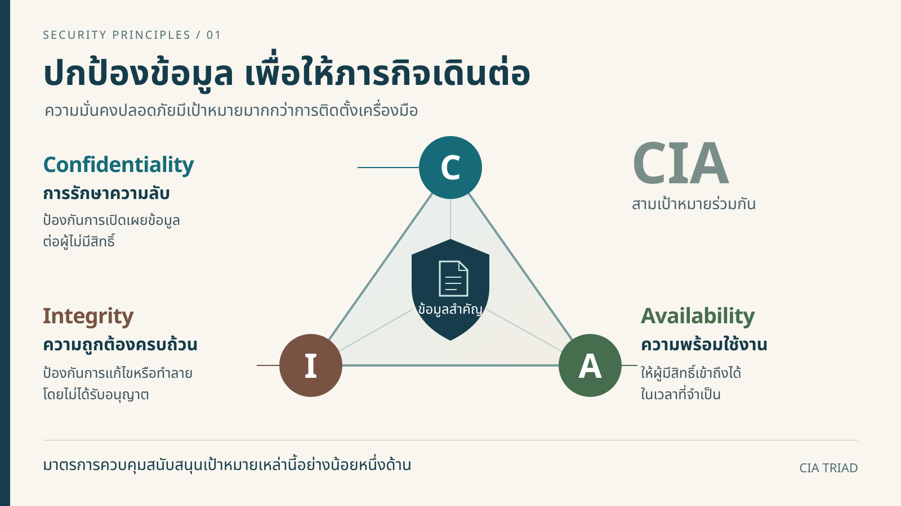
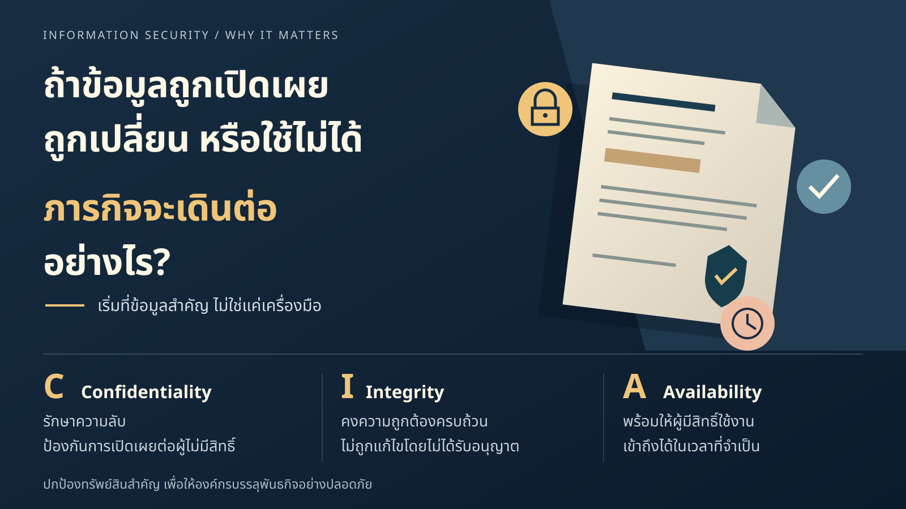
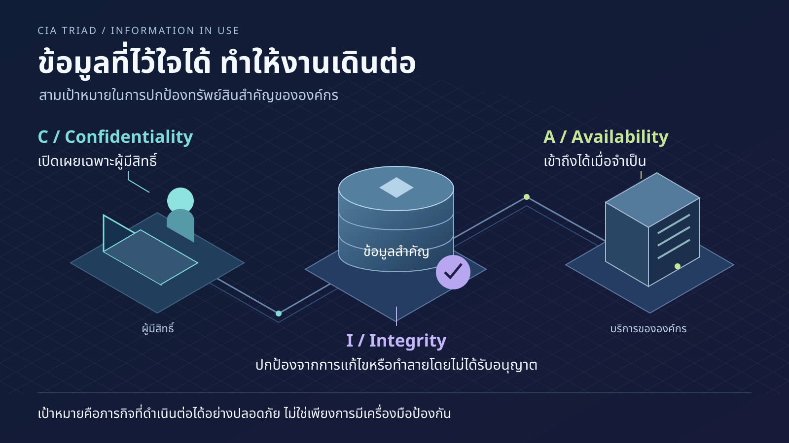

CONCEPT A
Focus A ↗Premium educational infographic

CONCEPT B
Focus B ↗Editorial visual storytelling

CONCEPT C
Focus C ↗Creative cybersecurity presentation

Full explanation & source context
The canvases use concise teaching summaries. The complete current Slide 1 text remains below, in Thai and English. No concept has been approved or connected to the production renderer.
Loading the local source snapshot…